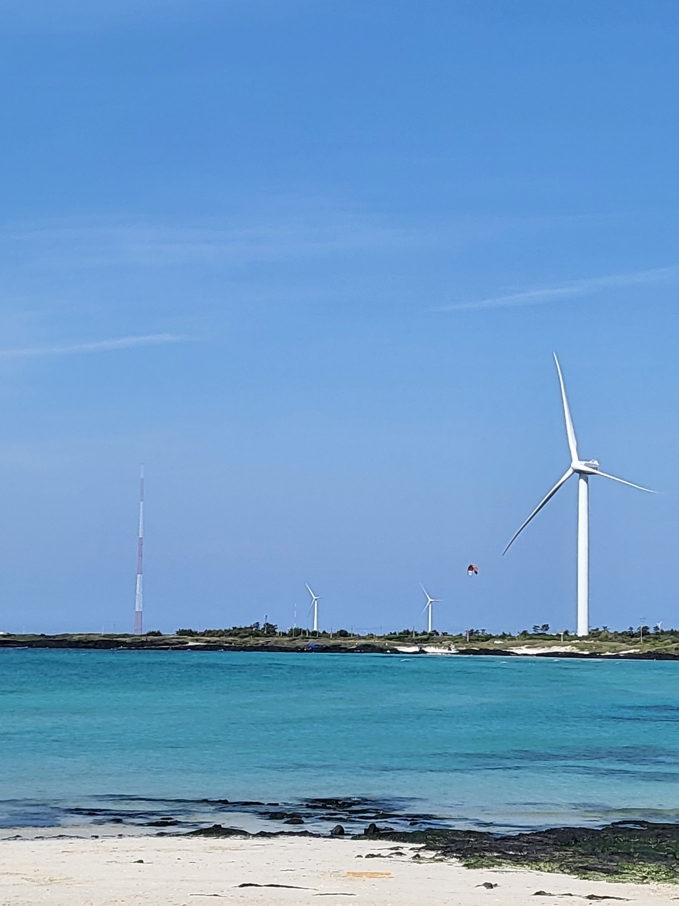
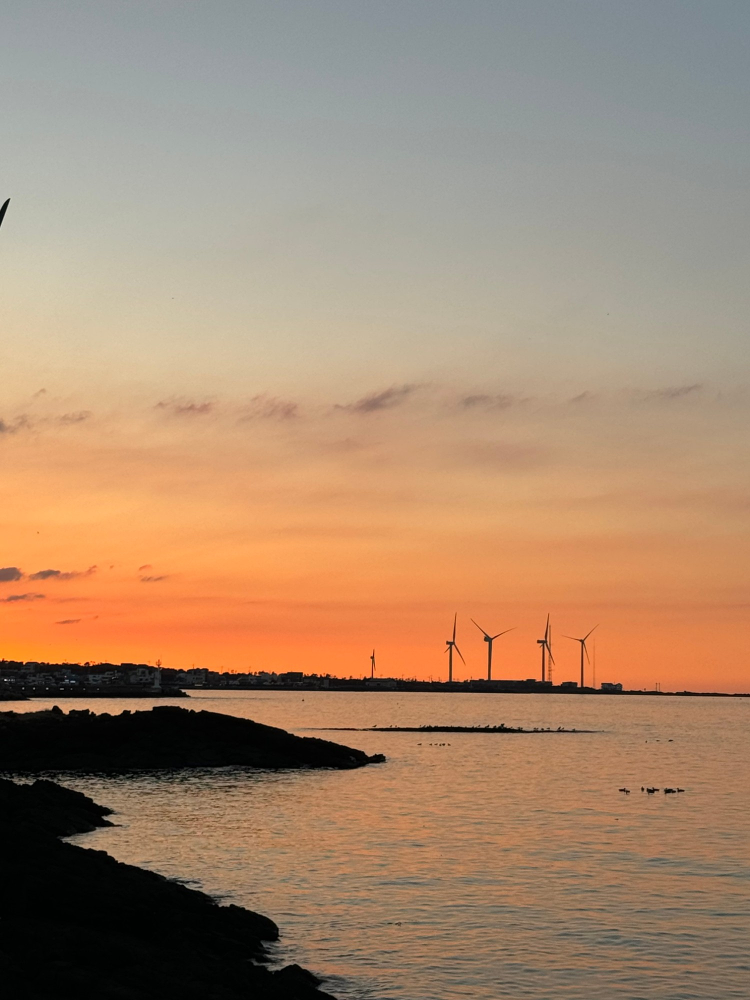
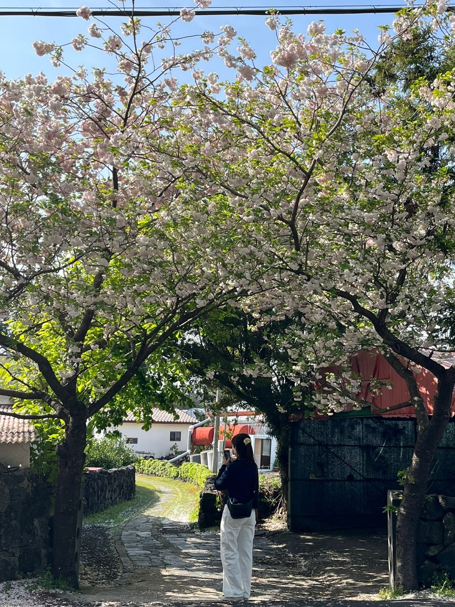
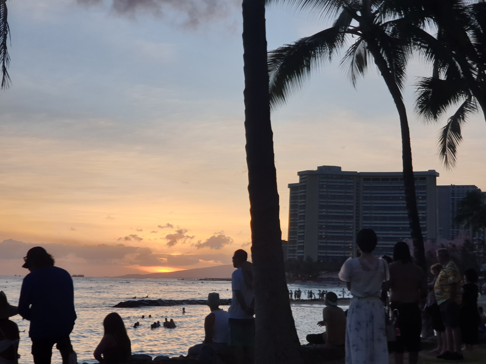
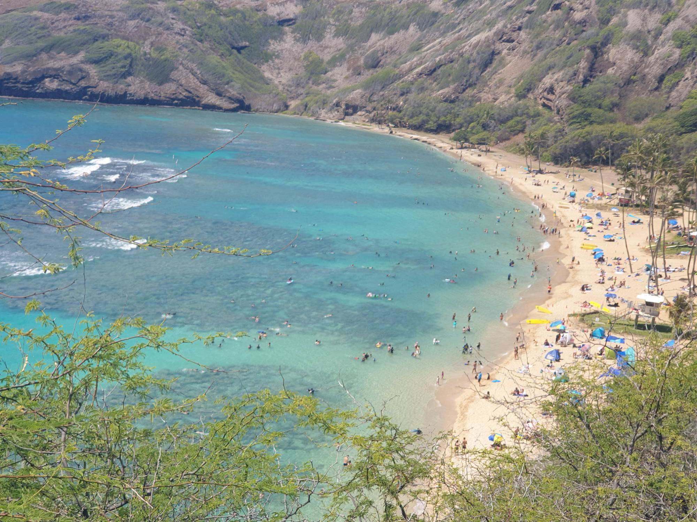
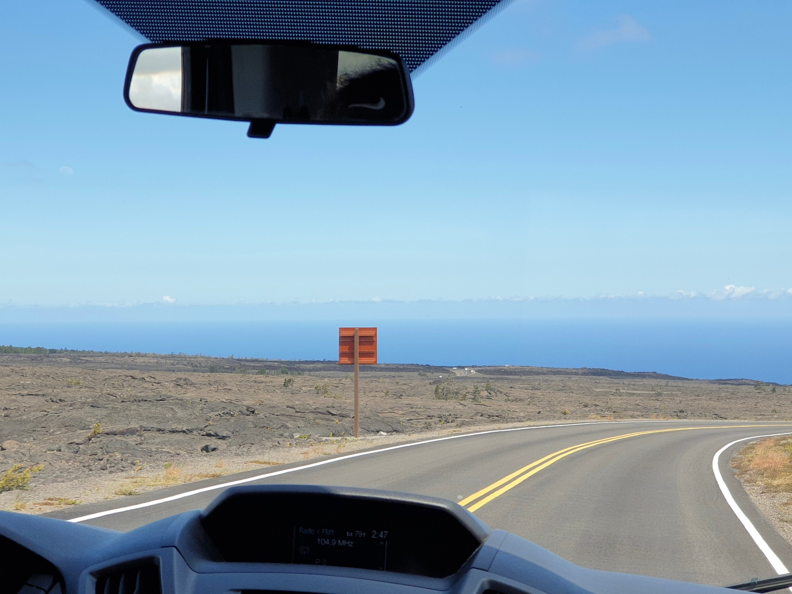

October 2026
Cities
바다와 산을 한 번에 품은 두 섬. 직접 살아 본 제주, 그리고 푸른 태평양 위의 하와이입니다.
Jeju Island 제주




여행이 아니라 ‘살아 본’ 제주. 관광지로만 알던 섬이 생활하는 도시가 되었던 몇 달의 기록입니다.
- 01구좌 바닷가 마을 걷기김녕 · 월정리 · 세화 해변을 따라 천천히
- 02오름 산책용눈이오름, 다랑쉬오름
- 03바다가 보이는 카페창가 자리에서 책 한 권 읽기
- 04숲속 카페나무 사이에 앉아 아무 생각 없이 멍때리기
Why I recommend it
2023년 봄, 인턴 생활을 하며 3개월 동안 제주에서 지냈습니다. 짧은 여행으로 왔을 때는 몰랐던 평일 아침의 조용한 바다, 퇴근길에 보이는 오름의 능선 같은 것들이 아직도 기억에 남습니다. 관광지로만 알던 곳이 ‘생활하는 도시’가 되는 경험이 특별했습니다.
제주는 산과 바다를 한 번에 느낄 수 있는 곳이라, 머무는 것만으로도 충분히 힐링이 됩니다. 기회가 된다면 2박 3일보다 길게, 일주일 이상 머물러 보시길 추천합니다. 식당이나 카페가 궁금하시면 편하게 물어봐 주세요!
Hawaii 하와이



일 년 내내 여름인 섬. 바다에서 하루를 시작하고, 노을로 하루를 마무리하는 곳입니다.
- 01다이아몬드 헤드아침 일찍 올라 와이키키를 한눈에
- 02와이키키 해변바다 수영 후 해변에서 책 한 권
- 03빅아일랜드 섬투어오아후 근처 섬 빅아일랜드 화산투어하기
Why I recommend it
하와이도 제주처럼 산과 바다를 한 번에 느낄 수 있는 섬입니다. 해변 바로 뒤로 초록빛 산이 이어지고, 어디서든 고개만 돌리면 바다가 보여서 섬 전체가 커다란 휴양지 같습니다.
바쁘게 관광지를 도는 것보다 해변이나 공원에 앉아 바람 소리를 들으며 멍때리는 시간이 더 어울리는 곳이라, 제주를 좋아하는 분이라면 하와이도 분명 좋아하실 거예요.